library(readxl)
library(writexl)
library(tidyverse)Presentation 3: ggplot2
Want to code along? If you haven’t already, go to the Data tab of the website and press the DOWNLOAD PRESENTATIONS button. This is presentation3.
Importing libraries and data
Load data
In the examples below, we use the downloads dataset. The dataset is available as an Excel file, which we import using the readxl package. Because ggplot2 is part of the tidyverse, we also load the tidyverse packages so we can use its tools for data wrangling and visualization.
We read the downloads dataset from the Excel file, and assign it to a tibble named downloads.
downloads <- read_excel("../Data/downloads.xlsx") %>%
filter(size > 0)
downloads# A tibble: 36,708 × 6
machineName userID size time date month
<chr> <dbl> <dbl> <dbl> <dttm> <chr>
1 cs18 146579 2464 0.493 1995-04-24 00:00:00 1995-04
2 cs18 995988 7745 0.326 1995-04-24 00:00:00 1995-04
3 cs18 317649 6727 0.314 1995-04-24 00:00:00 1995-04
4 cs18 748501 13049 0.583 1995-04-24 00:00:00 1995-04
5 cs18 955815 356 0.259 1995-04-24 00:00:00 1995-04
6 cs18 596819 15063 0.336 1995-04-24 00:00:00 1995-04
7 cs18 169424 2548 0.285 1995-04-24 00:00:00 1995-04
8 cs18 386686 1932 0.286 1995-04-24 00:00:00 1995-04
9 cs18 783767 7294 0.397 1995-04-24 00:00:00 1995-04
10 cs18 788633 4470 3.41 1995-04-24 00:00:00 1995-04
# ℹ 36,698 more rowsHere we have filtered out rows where size is zero, as they do not represent actual downloads and would distort the visualization.
ggplot2: The basic concepts
A ggplot object is a structured description of a plot. The function ggplot() creates the equivalent of a blank sheet of paper, ready for layers to be added.
The two most important components of any ggplot are:
The dataset — typically a
data.frameortibblecontaining the variables you want to plotThe aesthetics (
aes()) — a set of mappings that tell ggplot how to use the variables: x-axis, y-axis and whether to use color, fill, group, size, shape, etc. to represent groups or magnitudes
ggplot(
downloads, # dataframe
aes(x=machineName) # x-value
) 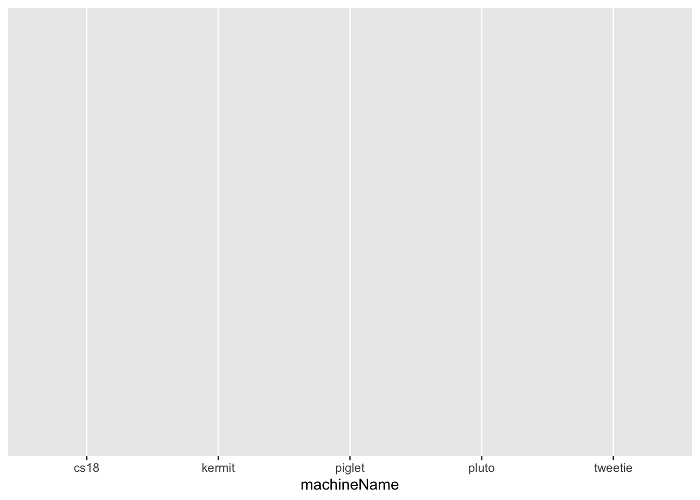
This creates an empty coordinate system with axes defined — essentially a blank canvas.
At this point, ggplot has only drawn the axes and labels because we have not yet specified how the data should be visualized.
The next step is to add a geom layer (for example, geom_bar()) to actually display the data.
ggplot2: Plotting One Variable
A bar chart is created with geom_bar() and is useful for visualizing the distribution of a single categorical variable — for example, machineName in this dataset.
geom_bar() automatically counts the number of observations in each category and uses those counts as the bar heights. By default, categories on the x-axis are displayed in alphabetical order.
ggplot(
downloads, # dataframe
aes(x=machineName)) + # categorical variable on x-axis
geom_bar() # geometrical object - bar chart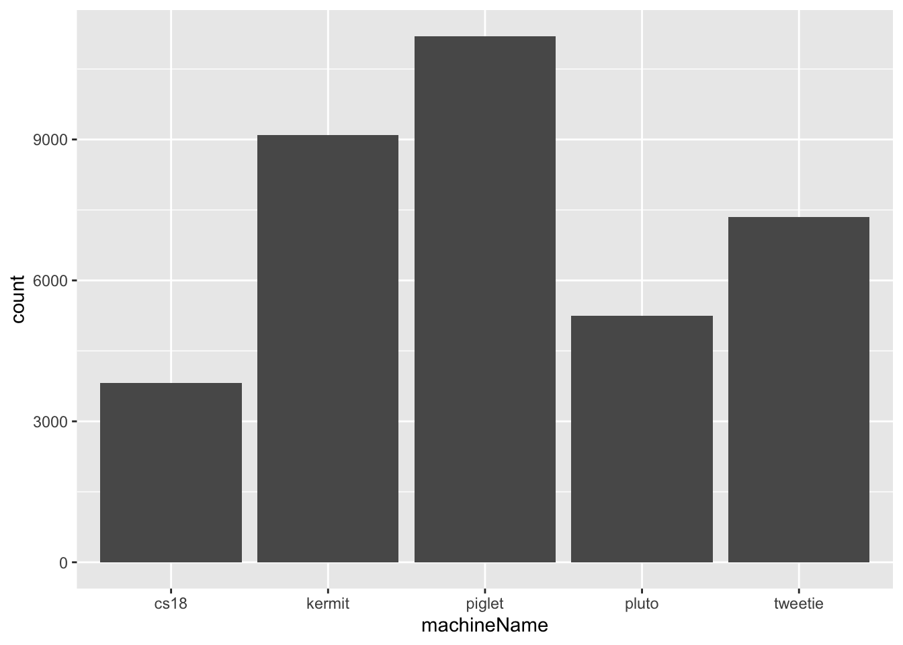
Or we can plot a histogram. It shows the distribution of a continuous variable by dividing the data into bins and counting observations in each bin.
ggplot(
downloads, # dataframe
aes(x = log2(size))) + # continuous variable (log2-transformed)
geom_histogram() # geometrical object - histogram`stat_bin()` using `bins = 30`. Pick better value `binwidth`.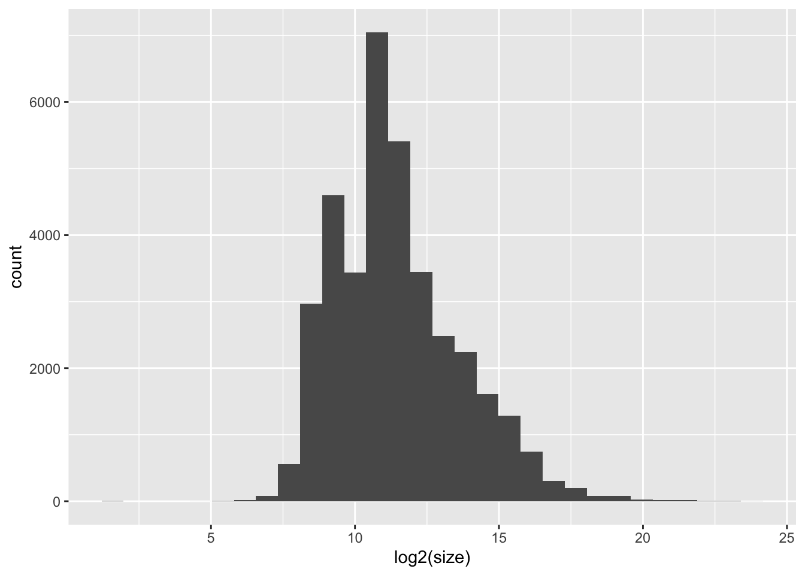
Aesthetics in ggplot2
In ggplot2, aesthetics (aes()) map variables in your data to visual properties of the plot. In addition to x and y, you can map optional aesthetics such as fill, colour, size, alpha, group, or shape. By changing which aesthetic a variable is mapped to, we can tell ggplot how to display differences between categories.
ggplot(
downloads,
aes(x = machineName,
fill = month)) + # fill by catergorical variable
geom_bar() 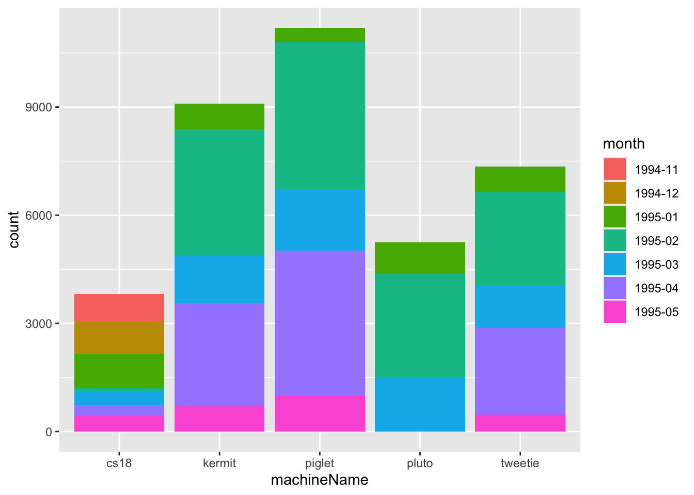
Here, mapping fill = month tells ggplot to calculate counts separately for each month and assigns a different fill color to each month and stack the bars.
ggplot(
downloads,
aes(x = machineName,
colour = month)) + # Colour by catergorical variable
geom_bar() 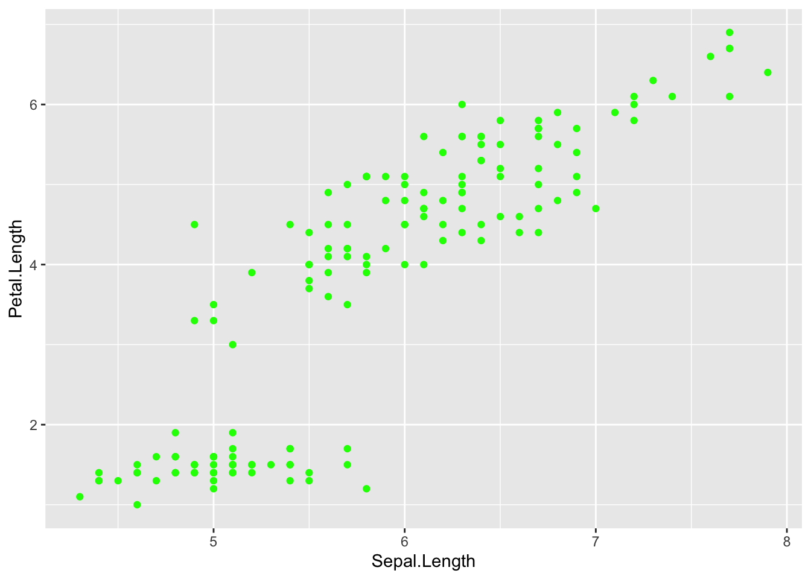
Here, colour = month only changes the outline color of the bars — the interior remains unfilled (or transparent).
Geometric objects
Geoms (geometric objects) are the core building blocks of ggplot2. They tell ggplot what kind of plot layer to draw. Each geom requires data and aesthetics specified inside aes().
Geoms inherit global aesthetics from the main ggplot() call, but you can override them locally inside each geom if needed.
You can adjust how geoms are displayed using various options. For bar charts, position adjustments control how overlapping or grouped data appear. In the previous example, mapping fill, colour, or group = month subdivided each bar by month, producing stacked bars (the default).
You can change this behavior by setting the position argument inside geom_bar():
position = "dodge"→ places bars for each group side by sideposition = "fill"→ normalizes bar heights so they represent proportions (percentages).
ggplot(
downloads,
aes(x = machineName,
fill = month)) +
geom_bar(position = "dodge") # side by side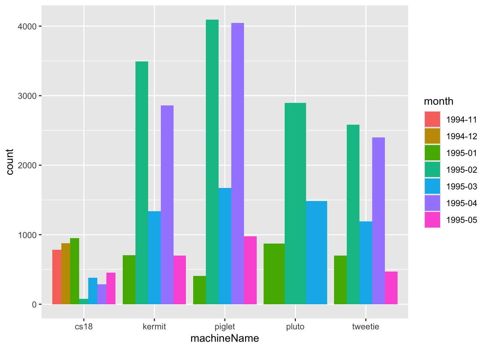
ggplot(
downloads,
aes(x = machineName,
fill = month)) +
geom_bar(position = "fill") # proportions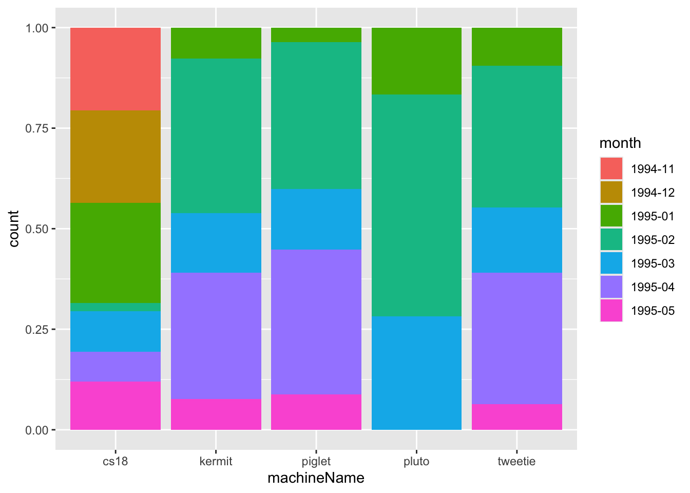
A simple Column Chart
To make a bar chart from pre-summarized data, we use geom_col() and it requires both x and y values.
Suppose we want to plot the total size of all downloads per machine.
We first create a summary tibble dl_sizes using:
group_by()to group the dataset bymachineNamesummarise()to calculate the sum ofsizewithin each group
In the example below, we also rescale the download sizes from bytes to megabytes by dividing by 1,000,000.
dl_sizes <- downloads %>%
group_by(machineName) %>%
summarise(size = sum(size))We now plot machineName on the x-axis and the total size (in MB) on the y-axis:
ggplot(
dl_sizes,
aes(x = machineName,
y = size/10^6)) +
geom_col()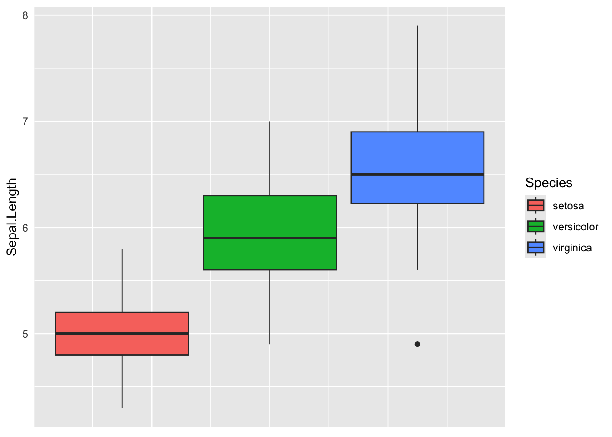
A Column Chart with Ordered Bars
By default, categorical variables in R (called factors) are displayed in alphabetical order on the x-axis. Suppose we want the machines in our bar chart to be ordered by increasing total download size instead. This is actually not that easy in R.
We can do this by converting machineName into a factor with levels ordered according to download size.
First, arrange the dl_sizes tibble by size using tidyverse function arrange.
dl_sizes <- dl_sizes %>%
arrange(size)
dl_sizes# A tibble: 5 × 2
machineName size
<chr> <dbl>
1 pluto 72605544
2 cs18 100593281
3 tweetie 104379794
4 piglet 158149841
5 kermit 175032552Next, set the levels of machineName according to the arranged order:
dl_sizes <- dl_sizes %>%
mutate(machineName = factor(machineName, levels = dl_sizes$machineName))
dl_sizes$machineName[1] pluto cs18 tweetie piglet kermit
Levels: pluto cs18 tweetie piglet kermitNow machineName is a factor with levels ordered from lowest to highest total download size.
Finally, use the same ggplot() code as before to make the plot — now the bars will be ordered by total size rather than alphabetically:
ggplot(
dl_sizes,
aes(x = machineName,
y = size/10^6)) +
geom_col()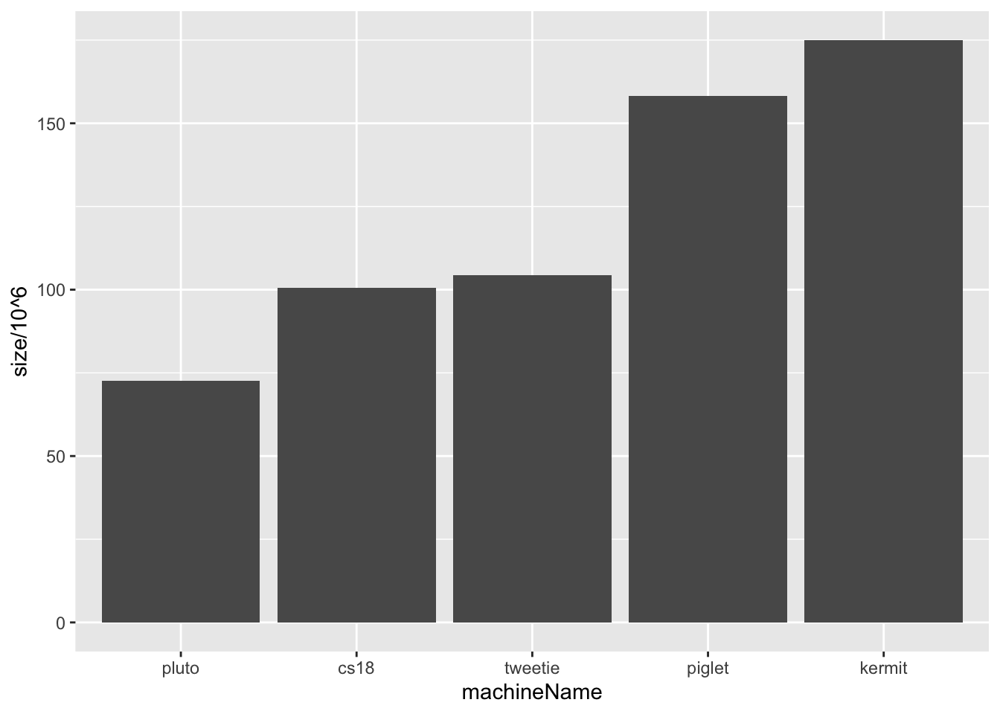
Coordinate System in ggplot2
In the next R chunk we will for the first time try to save the syntaxical description of a plot in an R variable. This makes it easy to reuse and modify the same plot — for example, to change scales or coordinate systems — without rewriting the entire code. Let’s try this out.
p <- ggplot(
dl_sizes,
aes(x = machineName,
y = size / 10^6)) +
geom_col()Here, we store the bar chart in a variable called p. Running this code does not display the plot yet, but a variable named p now appears in the Global Environment.
Because the plot is saved in p, we can easily modify it by adding more layers:
# Flip the coordinate axes:
p + coord_flip()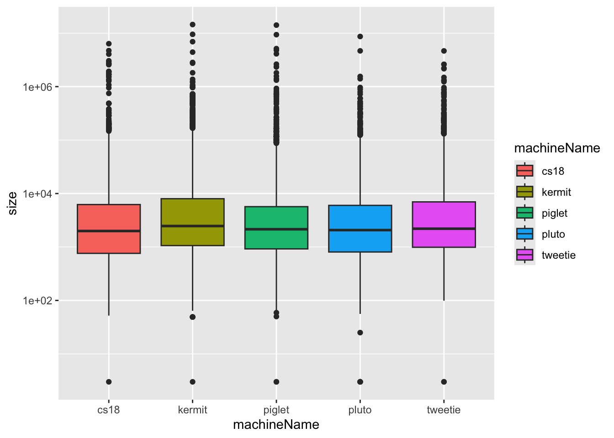
This swaps the x- and y-axes, which is often helpful when category names are long — it makes the plot easier to read.
#Change the scale of the y-axis:
p + scale_y_log10()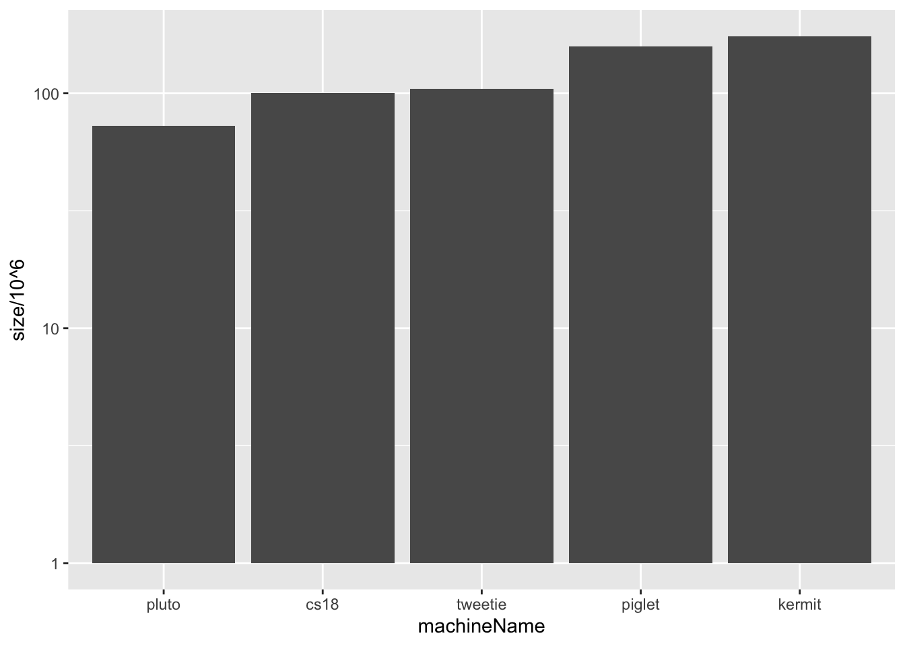
A logarithmic scale is useful when the data are highly skewed or span several orders of magnitude, making it easier to compare smaller values.
A box plot
Boxplots are great to get an overview of continues variables, identifying outliers and comparing distributions across categories. Let’s create a boxplot of monthly download sizes for each machine.
Because the data are skewed, we use a logarithmic y-scale to make the plot more interpretable.
Additionally, themes and titles can be added as a layer to any ggplot if you prefer a theme other than the default grey background.
p <- # save in object p
ggplot( # call ggplot
downloads, # data
aes(x = machineName, # x and y and fill
y = size,
fill = machineName)) +
geom_boxplot() + # boxplot
scale_y_log10() # scale
p1 <- p +
theme_minimal() + # add theme ..................
# theme_bw()
# theme_classic()
# theme_dark()
labs(x = 'Machines', # add label ..................
y = 'Size in Mb',
title = 'Boxplot')
p1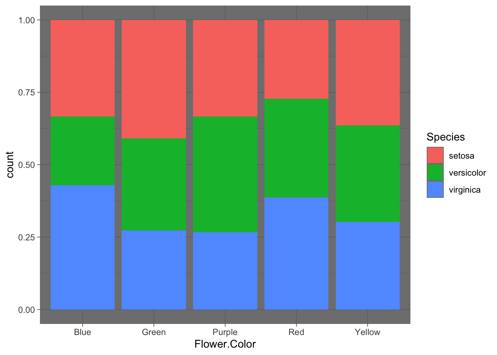
Violin plot with geom_violin
A violin plot shows the distribution of a continuous variable across different categories, combining the features of a box plot and a density plot.
p <- # save in object p
ggplot( # call ggplot
downloads, # data
aes(x = machineName, # x and y and fill
y = size,
fill = machineName)) +
geom_violin() + # draw violin plots, trim tails
scale_y_log10() # scale
p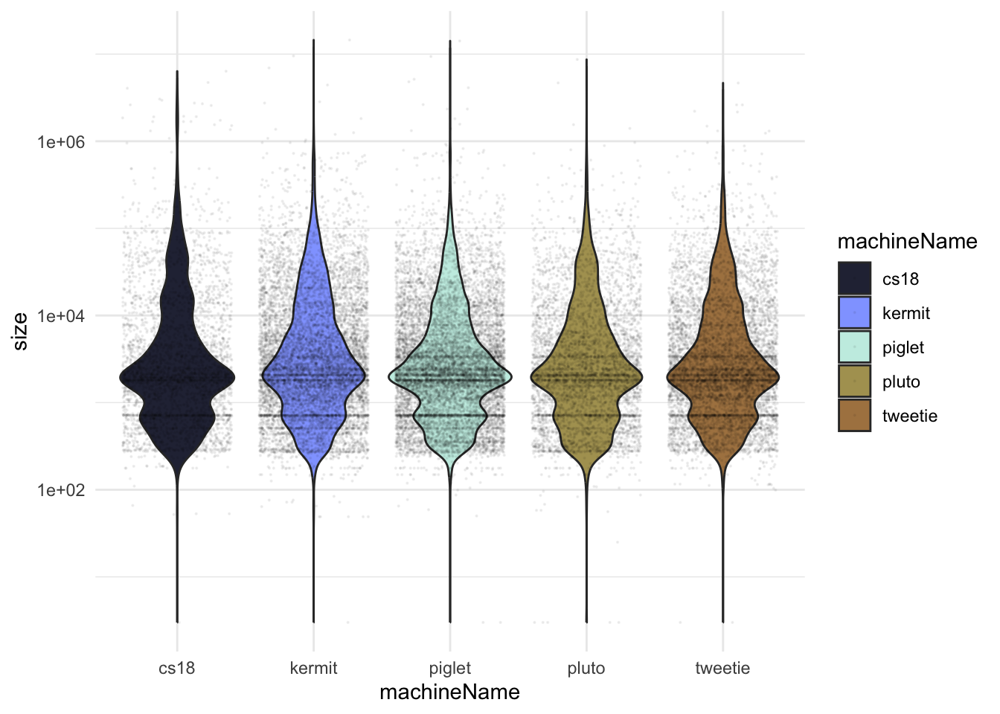
We can enhance the plot by overlaying individual data points (with jittering to avoid overplotting), using a minimal theme, and customizing the fill colors:
p2 <- p +
geom_jitter( # overlay geom
size = 0.1, alpha = 0.05) +
theme_minimal() + # theme
scale_fill_manual(
values=c("#2A2D43", # change colors
"#91A6FF",
"#C7EDE4",
"#AFA060",
"#AD8350"))
p2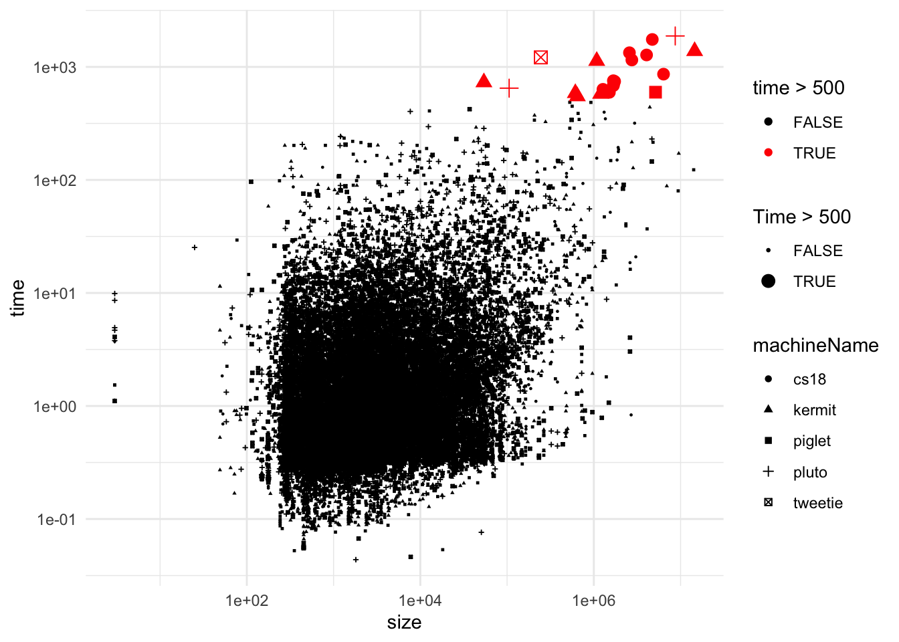
Faceting
First, let’s create a previous boxplot of download size by machine and enhanced it with fill = month to split data by a second categorical variable.
p <- # save in object p
ggplot( # call ggplot
downloads, # data
aes(x = machineName, # x and y and fill
y = size,
fill = month)) + # add fill by month ..................
geom_boxplot() + # boxplot
scale_y_log10() # scale
p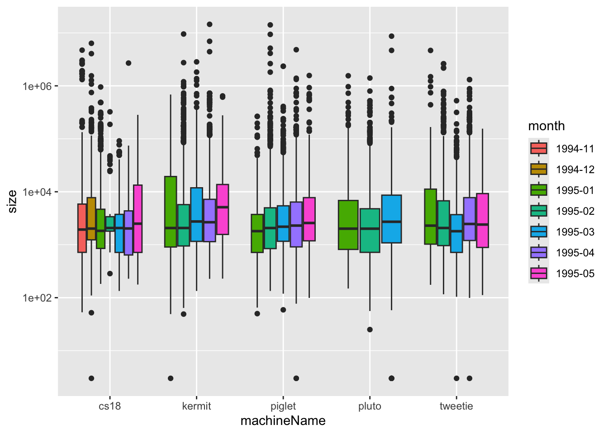
Sometimes adding a fill aesthetic makes a plot too busy, especially if there are many categories. Instead, we can use faceting to split the data into multiple smaller plots — one for each category — making it easier to compare groups.
#p + facet_grid(vars(month))
p + facet_wrap(vars(month))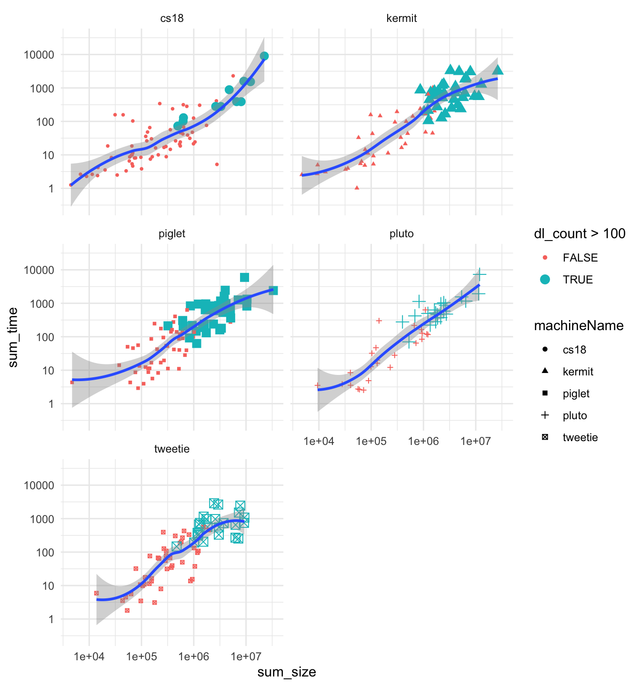
This wraps the plots into multiple rows and columns automatically, which is helpful when there are many facet levels.
Daily summary statistics
Next we want to visualize the number and the total size of the downloads done each date for each of the 6 machines. For later usage we also compute the cumulated number of downloads within each of the 6 machines over the dates. As before we do this via the following steps:
Using
group_by()we group the dataset by both machineName and date.Using
summarize()we count the number and the total size of the downloads for within each machine and date.Using
mutate()we cumulate the number of downloads over the dates within the machines.
daily_downloads <-
downloads %>%
group_by(machineName, date) %>%
summarize(dl_count = n(),
size_mb = sum(size)/10^6) %>%
mutate(total_dl_count = cumsum(dl_count))`summarise()` has grouped output by 'machineName'. You can override using the
`.groups` argument.daily_downloads# A tibble: 337 × 5
# Groups: machineName [5]
machineName date dl_count size_mb total_dl_count
<chr> <dttm> <int> <dbl> <int>
1 cs18 1994-11-22 00:00:00 168 22.4 168
2 cs18 1994-11-23 00:00:00 191 12.2 359
3 cs18 1994-11-24 00:00:00 256 8.05 615
4 cs18 1994-11-25 00:00:00 13 0.0655 628
5 cs18 1994-11-28 00:00:00 133 0.625 761
6 cs18 1994-11-29 00:00:00 8 0.0201 769
7 cs18 1994-11-30 00:00:00 14 0.209 783
8 cs18 1994-12-01 00:00:00 35 0.631 818
9 cs18 1994-12-02 00:00:00 61 5.67 879
10 cs18 1994-12-03 00:00:00 11 0.156 890
# ℹ 327 more rowsScatter plot with geom_point
A scatter plot is used to explore the relationship between two numerical variables by plotting them on the x- and y-axes. You can visualize a third numeric variable by mapping it to the size aesthetic.
Here we will visualize the relationship between daily download counts and time and map size in Mb to size aesthetic. We use geom_point() to draw individual data points.
We can also color the points based on whether the download size is greater than 1 MB by mapping color = size_mb > 1 inside aes(). This highlights larger downloads, making them easier to spot in the plot.
p <- ggplot(
daily_downloads,
aes(x = date,
y = dl_count,
size = size_mb,
color = size_mb>1)) +
geom_point() +
scale_y_log10()
p3 <- p
p3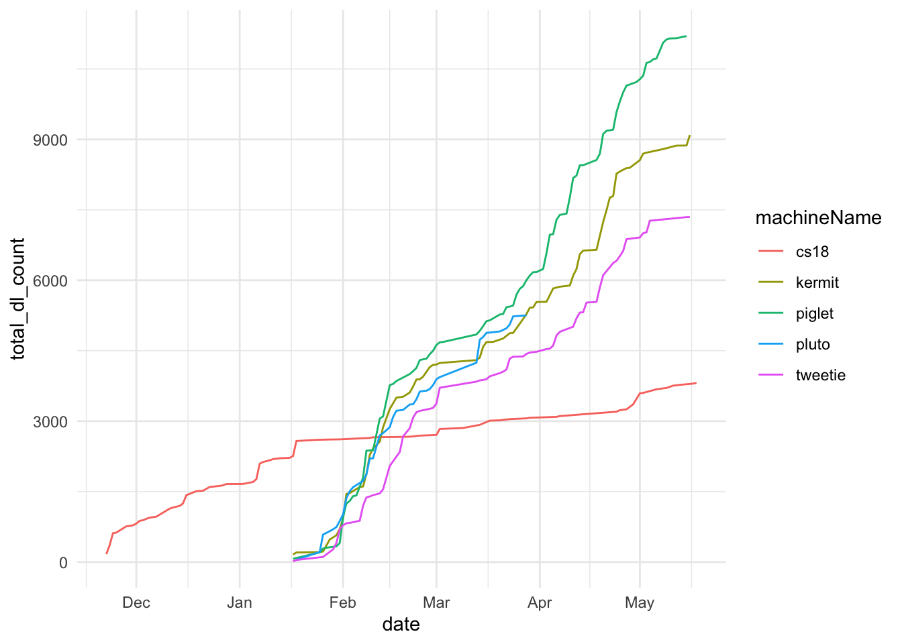
Line plot with geom_line
The geom called geom_line() is used to insert lines, which is ideal for showing trends over time or continuous changes. In the code below you see a first attempt to write R code that visualizes the cumulated total download size over the dates.
We create a plot of the cumulative total download count over time:
ggplot( # call ggplot
daily_downloads, # data
aes(x = date, # x and y
y = total_dl_count)) + # line
geom_line()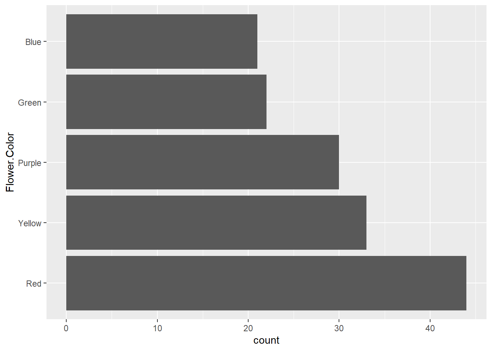
If we want a separate line for each machine, we must tell ggplot how to group the data. We can do this by mapping color = machineName (and optionally color by machine as well):
p4 <- ggplot(
daily_downloads,
aes(x = date,
y = total_dl_count,
colour = machineName)) +
geom_line()
p4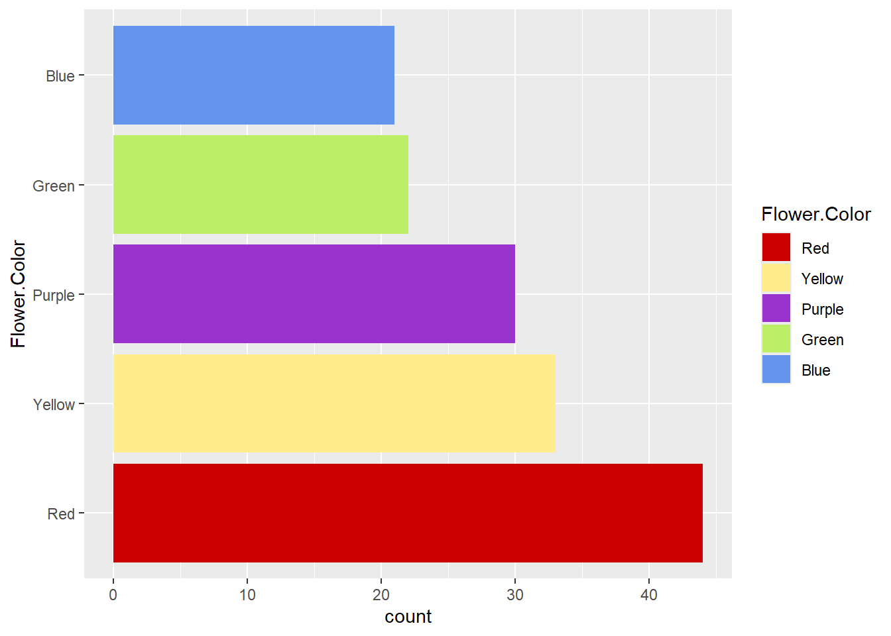
Arrange multiple ggplots on the same page
In R there is a whole infrastructure of extension packages built around ggplot, that facilitate different types of plot modifications, arrangements, and animation.
R package ggpubr is one of them and it helps to produce publication-ready plots using ggplot2.
# install.packages("ggpubr")
library(ggpubr)
figure <- ggarrange(p1, p2, p3, p4,
align = "hv",
labels = c ("A", "B", "C", "D"),
ncol = 2, nrow = 2)
figure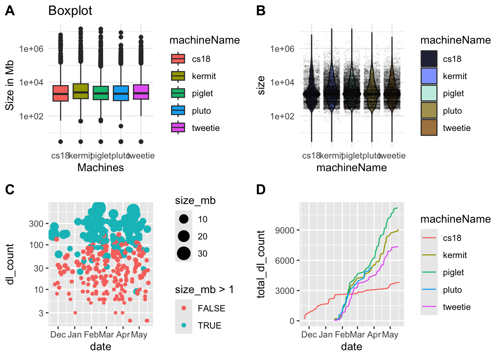
## Save Tibble and Save Plot:
#write_xlsx(daily_downloads, "daily_downloads.xlsx")
#ggsave(filename = "vionlinPlot.pdf", plot = p2, height = 5, width = 10)
#pdf("vionlinPlot2.pdf", height = 5, width = 10)
#p2
#dev.off()Conclusion
The ggplot2 package is a powerful and versatile tool for making plots.
We think, that the generated plots are beautiful.
As far as we know some plots, e.g. using faceting (see the exercises), in practice are only producible in ggplot2.
Learning the syntax needed for making specific plots is a challenge. The best way (the only way!?) to learn is to practice. You may start by solving the exercise sheet. After you have gotten used to the basic ideas you can find a lot of help on the internet. We remark, that there have been several updates of the ggplot2 package over the recent years. And some of the old entries that might pop up when you google a ggplot2-issue might be outdated.
Not all things can be made in ggplot2! For a geometrical object to be available it need to have a syntaxical description, and it needs to be implemented. Other things require computer-hacks to be made (e.g. using different orderings of categorical variables in faceted plots).